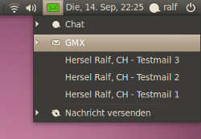
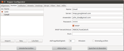
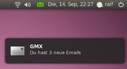
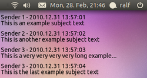

Popper
Archivierte Anleitung
Dieser Artikel wurde archiviert, da er - oder Teile daraus - nur noch unter einer älteren Ubuntu-Version nutzbar ist. Diese Anleitung wird vom Wiki-Team weder auf Richtigkeit überprüft noch anderweitig gepflegt. Zusätzlich wurde der Artikel für weitere Änderungen gesperrt.
Achtung!
Ab Ubuntu 12.10 funktioniert Popper nicht mehr, weil sich die Schnittstelle zum Unity-Messaging-Menü geändert hat.
Zum Verständnis dieses Artikels sind folgende Seiten hilfreich:
 Popper
Popper  ist ein Benachrichtiger für neue E-Mails, der sich in das Benachrichtigungsmenü von Ubuntu einfügt. Es unterstützt beliebige POP- oder IMAP-Konten. Die E-Mails des Posteingangs werden im Benachrichtigungsmenü einzeln aufgeführt oder in einer Sammeldarstellung für jedes E-Mail-Konto angezeigt. Das Verhalten und die angezeigten Information über neue E-Mails können vielfältig konfiguriert werden.
ist ein Benachrichtiger für neue E-Mails, der sich in das Benachrichtigungsmenü von Ubuntu einfügt. Es unterstützt beliebige POP- oder IMAP-Konten. Die E-Mails des Posteingangs werden im Benachrichtigungsmenü einzeln aufgeführt oder in einer Sammeldarstellung für jedes E-Mail-Konto angezeigt. Das Verhalten und die angezeigten Information über neue E-Mails können vielfältig konfiguriert werden.
Zu den Funktionen von Popper gehören:
Umfangreicher Konfigurator
Benachrichtigung über neue E-Mails mittels Ton, Sprachausgabe, Infobox, Benachrichtigungsmenü oder Desktop-Anzeige
Eigenes Fenster für die Sammeldarstellung aller E-Mails eines Kontos
Starten von beliebigen E-Mail-Programmen (Evolution, Thunderbird, usw.)
Eigene Shell-Skripte bei bestimmten Ereignissen starten
Spam-Filter, Import bestehender Email-Konten, Sprachausgabe und vieles mehr
|  |
| Popper |
Installation¶
Das Programm ist nicht in den offiziellen Paketquellen enthalten.
PPA¶
Ab Ubuntu 11.04 kann Popper über ein "Personal Package Archiv" (PPA) [1] installiert werden.
Adresszeile zum Hinzufügen des PPAs:
ppa:ralf.hersel/rhersel-ppa
Hinweis!
Zusätzliche Fremdquellen können das System gefährden.
Ein PPA unterstützt nicht zwangsläufig alle Ubuntu-Versionen. Weitere Informationen sind der  PPA-Beschreibung des Eigentümers/Teams ralf.hersel zu entnehmen.
PPA-Beschreibung des Eigentümers/Teams ralf.hersel zu entnehmen.
Damit Pakete aus dem PPA genutzt werden können, müssen die Paketquellen neu eingelesen werden.
Nach dem Aktualisieren der Paketquellen kann man folgendes Paket installieren [2]:
popper (ppa)
 mit apturl
mit apturl
Paketliste zum Kopieren:
sudo apt-get install popper
sudo aptitude install popper
Nach der Installation kann das Programm über den Menüeintrag "Anwendungen -> Internet -> Popper Configurator" gestartet werden.
|  |
| Konfiguration |
Bedienung¶
Das Konfigurationsprogramm (Popper Configurator) bietet eine Reihe von Einstellungen, welche die E-Mail-Konten, die angezeigten Informationen und das Verhalten von Popper beeinflussen. Genaue Angaben über die Bedeutung der einzelnen Optionen finden sich in der Hilfe (letzter Reiter im Konfigurationsprogramm).
Nach Abschluss der Konfiguration wird Popper automatisch gestartet. Im Benachrichtigungsmenü erscheint ein neuer Eintrag, unter dem die E-Mails aus dem Posteingang des E-Mail-Servers aufgelistet werden. Neueingänge werden durch einen Ton und ein Pop-up angezeigt.
Popper kann Zusatzfunktionen im Benachrichtigungsmenü einblenden: Öffnen eines E-Mail-Programms (Klick auf die Überschrift), sofortiges Überprüfen des Posteingangs ("check"), Sammeldarstellung aller E-Mails ("list"), Löschen der E-Mails aus dem Menü ("clear"), Abbruch des Programms ("exit").
|  |
| Benachrichtigung |
Funktionsweise¶
Popper liest in einstellbaren Zeitabständen die E-Mails aus dem Posteingang eines oder mehrerer POP3- oder IMAP-E-Mail-Server via SSL, falls vom E-Mail-Server unterstützt. Popper kann auch so konfiguriert werden, dass nur SSL-verschlüsselte Verbindungen aufgebaut werden dürfen und ansonsten keine Kommunikation mit dem E-Mail-Server zustande kommt.
Absender und Betreff der E-Mails werden im Benachrichtigungsmenü aufgeführt. Die Anzahl neuer E-Mails wird in einer Info-Blase dargestellt. Popper vergleicht Neueingänge mit den bereits gemeldeten E-Mails und informiert nur über die tatsächlich neuen E-Mails.
Das Programm löscht keine E-Mails auf dem Server, sondern liest sie nur. Das Abholen bzw. Löschen der E-Mails auf dem Server obliegt dem E-Mail-Client wie z.B. Evolution oder Thunderbird. Popper kommuniziert nicht mit dem E-Mail-Client!
Die Information über bereits gemeldete E-Mails kann über die Sitzung hinaus behalten werden. Auf Wunsch speichert Popper diese Daten, so dass bei einem Neustart des PCs diese E-Mails nicht mehr als "neu" gemeldet werden.
|  |
| Transparentes Desktop Display |
Wenn Popper alle n Minuten auf neue E-Mails prüft, geschieht das folgendermaßen: Zuerst wird getestet, ob eine Internetverbindung besteht. Ist dies nicht der Fall, wird der Test alle 5 Sekunden wiederholt. Falls die Verbindung zeitweilig unterbrochen ist, z.B. beim Aufenthalt im Freien, kann dadurch die Verbindung von Popper so bald wie möglich wieder hergestellt werden. Bei bestehender Internetverbindung versucht Popper, den E-Mail-Server zu erreichen. Wenn dies nicht gelingt, erfolgt nach 30 Sekunden ein zweiter Versuch. Falls auch dieser fehlschlägt, wird versucht, den Server des nächsten E-Mail-Anbieters (falls vorhanden) zu erreichen. Sollte keiner der Server erreicht werden können, wird die gesamte Prozedur beim nächsten Prüfen (nach n Minuten) wiederholt.
Tipps¶
Beispiele für eigene Befehle¶
Folgende Befehle können beispielsweise als Commands for menu entries im Popper Configurator eingegeben werden:
| Optionen | |
| Befehl | Beschreibung |
| Eingebaute Befehle | |
clear | Löschen der E-Mails aus dem Popper-Menü |
list | Poppers Liste mit neuen E-Mails anzeigen |
check | Popper nach neuen E-Mails suchen lassen |
exit | Popper beenden |
| Evolution | |
evolution -c contacts | Evolution öffnen und die Kontakte anzeigen |
evolution -c calendar | Evolution öffnen und den Kalender anzeigen |
evolution mailto: | Eine neue Email in Evolution schreiben |
evolution --express | Evolution im Express-Modus öffnen |
| Thunderbird | |
thunderbird -compose | Eine neue Email in Thunderbird schreiben |
thunderbird -addressbook | Das Adressbuch von Thunderbird anzeigen |
| Opera mail | |
opera --remote 'openM2(new-window)' | Ein neues Opera mail-Fenster in Listendarstellung öffnen |
opera --remote 'openComposer(new-window)' | Eine Email in einem neuen Opera mail-Fenster schreiben |
| Webmail | |
xdg-open http://www.ubuntuusers.de | Ein neues Fenster (bzw. ein neuer Tab in einem bestehenden Fenster) des Standardbrowsers mit der entsprechenden Webmailadresse öffnen (siehe auch xdg-utils) |
Thunderbird aus dem Messaging Menü entfernen¶
Wer lieber nur das konfigurierbare Popper Menü im Unity Messaging Menü anzeigen lassen möchte, kann das Thunderbird Menü pro Benutzer "blacklisten" (deaktivieren).
Mit dem Befehl
mkdir -p ~/.config/indicators/messages/applications-blacklist/ cp /usr/share/indicators/messages/applications/thunderbird ~/.config/indicators/messages/applications-blacklist/
deaktivieren.
Um Thunderbird wieder zu aktivieren, muss die Textdatei thunderbird aus dem Verzeichnis ~/.config/indicators/messages/applications-blacklist/ entfernt werden.
Alternativen¶
mail-notification - Anzeigen neuer E-Mails
Unity Mail - für Unity konzipierter Emailbenachrichtiger
Links¶
Evolution - Standard-Email-Client von Gnome
Thunderbird - Beliebter Email-Client aus dem Mozilla-Projekt
Popper im Forum – Diskussion im Ubuntuusers-Forum
Projektseite auf Launchpad
- Erstellt mit Inyoka
-
 2004 – 2017 ubuntuusers.de • Einige Rechte vorbehalten
2004 – 2017 ubuntuusers.de • Einige Rechte vorbehalten
Lizenz • Kontakt • Datenschutz • Impressum • Serverstatus -
Serverhousing gespendet von